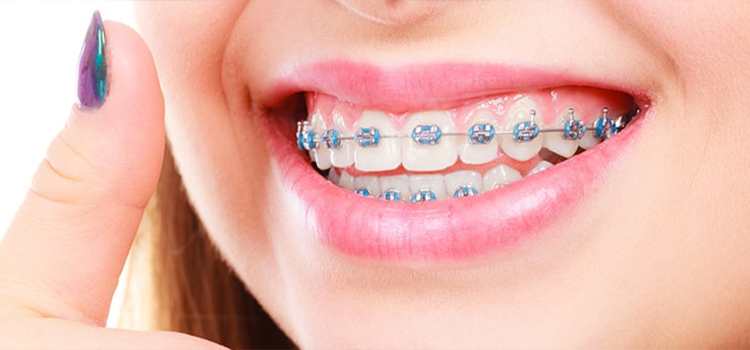

TBraces are of 2 different types:
You must have seen people wearing metal braces. It doesn’t look good when they smile. We, at SriRam Dental, are one of the best dental clinics in channai where we offer transparent braces to our patients for orthodontic treatments. These braces are not visible to others and are custom-made so that it snugly fits the teeth. Therefore, they do not hamper our smile while the treatment is in process.
Orthodontic treatment requires time, from days to months to years, depending upon the case. Earlier only metal braces were used. But that doesn’t look good while smiling. So people undergoing any braces treatment used to avoid smiling in public. With the use of these transparent braces, this issue is completely resolved. You can undergo a braces treatment, without people even noticing it when you smile.
Braces are given to patients who have misaligned teeth or a wrong bite. It is a corrective dental procedure. Wearing braces brings back your teeth to the proper position and gives you a perfect tooth alignment. The beauty of our face, especially the lower 3rd of our face is dependent on our teeth alignment. With braces treatment, a proper teeth alignment can be achieved. So, if you are looking for a perfect teeth alignment without showing your braces, book an appointment with us and we would be happy to help you.